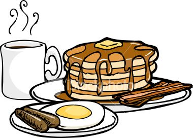
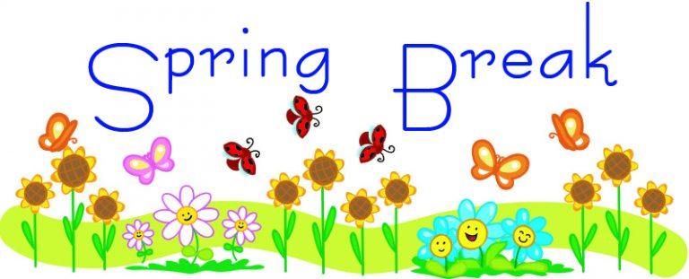

Lab meeting archive
Fall 2025
For the Fall 2025 Semester, we will meet on Thursdays from 8:00-8:50 am in room 467 Moore.
Monday, December 15, 2025

Lab Breakfast
8:00 am
@ The Waffle Shop Downtown
Thursday, December 11, 2025
- Attending
- Lina and Isabella Graduating! Congratulations!
- Discussed virtues of using reference mangers (e.g. Zotero, EndNote, Paperpile, Honeybear)
- Planned meeting time next semester: Wednesdays 4-5pm
Thursday, December 4, 2025
- Attending
- Discuss Science Communication
- Watch Veritasium Video: The Problem with Science Communication
- Paper: Herzenstein, Rosario, Oblander, & Netzer (2024)
- Homework
- Update Spring Calendar
Thursday, November 27, 2025

Thursday, November 20, 2025

Thursday, November 13, 2025
- Attending
- More on Autism and Tylenol: What’s the evidence?
- Review Paper: Shaw et al. (2025)
- Summary of Discussion
Thursday, November 6, 2025
- Attending
- Autism and Tylenol: What’s the evidence?
Thursday, October 30, 2025
- Attending
- Big data developmental neuroscience
- Discuss
- look at data on NIH Brain Development Cohorts (NBDC) Data Sharing Platform
- can view kinds of data available and aggregate data
- need an acount and agreement completed prior accessing the NBCD Data
- Strict Data environment required: NIST SP 800-171 or the equivalent ISO/IEC 27001/27002 standards.
- ISO/IEC 27001/27002 standards are behind a paywall. Can we find these standards at PSU Libraries?
- how much did NBDC platform cost to create?
- Homework
- Bring in any relevant papers to:
- Acetaminophen use during pregnancy
- Autism
- Circumcision
Thursday, October 23, 2025
- Attending
- Open scholarship overview
- We watched Data Sharing and Management Snafu in 3 Short Acts
- Discussed example: Reproducibility in Cancer Biology: Challenges for assessing replicability in preclinical cancer biology
- Read: Gilmore & Qian (2021)
- Review: “Open Scholarship Initiative” (n.d.), 2025 Open Scholarship Bootcamp; Gilmore & Pearce (2025)
- Homework
- Big data developmental neuroscience
- Review: HEALthy Brain and Child Development (HBCD) Study; Adolescent Brain Cognitive Development (ABCD) study
- Submit Biography for webpage (Ella, Megan, Isabella)
Thursday, October 16, 2025
- Attending
- Continue Databrary overview
- review May 2025 Association for Psychological Science (APS) presentation
- Homework
Thursday, October 9, 2025
- Attending
- Databrary overview
- Read: Gilmore & Adolph (2017), Gilmore, Kennedy, & Adolph (2018)
- Review: Gilmore, Seisler, Soska, Xu, & Liu (2025)
- Discuss Quarto/Rmarkdown Databrary User Guide & How to create biographies
- Homework
- Create or update Lab Biography for Webpage - include at least 2 Links and 1 item in Italic or Bold
Thursday, October 2, 2025
Thursday, September 25, 2025
- Attending
- PLAY project overview
- Read: Soska et al. (2021)
- Review: Soska, Hertzberg, Adolph, Gilmore, & Tamis-Lemonda (n.d.-b); Soska, Hertzberg, Adolph, Gilmore, & Tamis-Lemonda (n.d.-a)
- Homework
Thursday, September 18, 2025
- Attending
- Visual acuity project overview
- Homework
Thursday, September 11, 2025
Cancelled
Thursday, September 4, 2025
- Attending
- Introductions
- Fall 2025 Lab Priorities (Rick)
- Play & Learning Across a Year (PLAY) Project, PLAY site, Parent site, KoBoToolbox Surveys
- Data Collection Complete April 2025
- Locomotion Coding in Datavyu - Fall 2025
- 2-3 hours per video
- 75 video committment total
- Visual Acuity Project
- Classification of Sport Mega Analysis
- Early Childhood Behavior Questionnaire Mega Analysis
- Journal Club
- Homework - Required Training
- Create Discord Account and Join Lab Discord Channel - An email will be sent about this (Jeremy, Ella)
- CITI Training ASAP - new lab members (Anika, Ella, Isabella)
- Clery Act Training (Anika, Ella, Isabella)
- Reporting Suspected Child Abuse (Anika, Ella, Isabella, Kassandra, Lina)
- Values, Ethics, & Compliance Training (Anika, Brianna, Ella, Isabella, Kassandra, Lina)
- Title IX Training (Anika, Brianna, Ella, Isabella, Kassandra, Lina)
- Data Privacy at Penn State - EVERYONE
Spring 2025
For the Spring 2025 Semester, we will meet on Fridays 8:00-8:50 am in room 444 Moore.
Spring 2025 Commencement
Tuesday May 6, 2025
Lab Breakfast
8:00 am
@ The Waffle Shop Downtown
Friday May 2, 2025
- Attending
- Discuss (Brown & Yamamoto, 1986) and (Neijzen et al., 2025)
- Add (Brown & Yamamoto, 1986) data to typical/atypical developing datasets
- Review TELLER ACUITY CARDS™ II TAC II Manual (Co., n.d.) and ensure all papers at the end are in paperpile
- Homework
- If you will be here in the for the Fall 2025 semester, please update your google calendar with your schedule before August 1, 2025.
Friday April 25, 2025
- Attending
- Review Draft of VSS Poster Scipted using Quarto
Homework: Read paper (Brown & Yamamoto, 1986) here
Friday April 18, 2025
Meeting Cancelled!
Friday April 11, 2025
- Attending
- Spot Check Visual Acuity Data
- add column for units (cyc/deg and logMAR-Logarithmic Measure of Angle of Resolution)
- how to QA - person 1 read from table, person 2 look at data in google sheets
- CRAN: library(eye), library(eyedata) Package Info
- Snellen to logMAR: logMAR = -1 * log10(snellen_frac)
- To Snellen: Although there seems to be no good statistical reason to convert back to Snellen, it is a very natural thing to eye specialists to think in Snellen. A conversion to snellen gives a good gauge of how the visual acuity for the patients are. However, back-conversion should not be considered an exact science and any attempt to use formulas will result in very weird Snellen values that have no correspondence to common charts. Therefore, Snellen matching the nearest ETDRS and logMAR value in the VA conversion chart are used.
Friday, April 4, 2025
- Attending
- Discuss (Moher, Liberati, Tetzlaff, & Altman, 2009)
- Github repo: (“PRISMA2020,” n.d.)
Friday March 28, 2025
- Attending
- Visual Acuity Update
- Psy Chi Poster Update
- PAGC Poster Update
- Schedule more Visual Acuity Work Sessions for Thursday afternoons - on gilmore lab calendar
Homework
- Read (Moher et al., 2009)
Friday, March 7, 2025

Friday, February 28, 2025
Meeting Cancelled!
Friday, February 21, 2025
Attending
Visual Acuity Update
Julia Present (Palmer et al., 2005)
Accept invitation to DataCamp sent to your PSU email address - Brianna B.
Upcoming Events
- 2/25 Visual Acuity Work Session, 503 Moore, 1:30-3:30pm
- 2/28 Dr. Gilmore Present (Page et al., 2021)
- Homework
- Read (Page et al., 2021)
- CITI Training ASAP - Megan
- Clery Act Training by 2/14 - Bruna, Brianna, Nicole, Julia, Paige, Megan, Gavin
- Reporting Suspected Child Abuse by 2/18 - Bruna, Brianna, Nicole, Julia, Paige, Megan
- Values, Ethics, & Compliance Training by 2/18 - Bruna, Brianna, Nicole, Julia, Paige, Megan, Bri
- Title IX Training by 2/21 - Bruna, Brianna, Nicole, Julia, Paige, Megan, Bri
Friday, February 14, 2025
- Attending
- Paige Present: (Thunstedt et al., 2022)
- Visual Acuity Update
- almost done with source
- Accept invitation to DataCamp sent to your PSU email address - Bri, Gavin, Brianna, Bruna
- Poster Presentation Opportunities
- Psi Chi, the International Honor Society in Psychology, is hosting its annual Spring Research Conference in April.
- 2/21: Submit application at 11:59pm
- 4/23: 1:30-4:30pm In-person Conference, Moore Atrium
- 4/23: 6:00 -7:00pm Virtual Conference, Zoom
- The Undergraduate Exhibition is in April
- 2/24: application will be available
- 3/17: application due date
- 4/14-16: Virtual Exhibition
- 4/16: 11am-1pm In-Person Poster Presentation, Alumni Hall, HUB
- 4/17: 7:30-9pm An Evening of Creative Inquiry in Music, Recital Hall
- Upcoming Events
- 2/18 Visual Acuity Work Session, 503 Moore, 1:30-3:30pm
- 2/21 Julia Present (Palmer et al., 2005)
- 2/28 Dr. Gilmore Present (Page et al., 2021)
- Homework
- READ: (Palmer et al., 2005)
- CITI Training ASAP - Gavin, Megan
- Clery Act Training by 2/14 - Bruna, Brianna, Nicole, Julia, Paige, Megan, Gavin
- Reporting Suspected Child Abuse by 2/18 - Bruna, Brianna, Nicole, Julia, Paige, Megan
- Values, Ethics, & Compliance Training by 2/18 - Bruna, Brianna, Nicole, Julia, Paige, Megan, Bri
- Title IX Training by 2/21 - Bruna, Brianna, Nicole, Julia, Paige, Megan, Bri
Friday, February 7, 2025
- Attending
- Visual Acuity Project
- Review New Protocol
- Schedule work sessions
- 2/11/2025 1:30-3:30pm 503 Moore
- Upcoming Talks ~15 min
- 2/14: Paige Present (Thunstedt et al., 2022)
- 2/21: Julia Present
- Upcoming Meetings
- Visual Acuity: Mondays 12:00-1:00 in 503 Moore
- PLAY: Mondays 2:30-3:30 in 503 Moore
- Working Session - Visual Acuity: Tuesdays 1:30-3:30 in 503 Moore
- Homework
- Accept invitation to DataCamp sent to your PSU email address.
- Read and prepare to discuss (Thunstedt et al., 2022) for 2/14.
- CITI Training ASAP - Bri, Gavin, Megan
- Clery Act Training by 2/14 - Bruna, Brianna, Nicole, Julia, Paige, Megan, Gavin, Bri
Friday, January 31, 2025
Attending: Rick, Kassandra, Nicole, Paige, Brianna, Trinity, Hayley, Bri, Lina
- Interesting further reading: Freud, Sigmund. 1997. The Interpretation of Dreams. Translated by A. A. Brill. Wordsworth Classics of World Literature. Herts, UK: Wordsworth Editions.
Weekly Project Meetings
- Visual Acuity: Mondays 12:00-1:00 in 503 Moore
- PLAY: Mondays 2:30-3:30 in 503 Moore
Upcoming Talks ~15 min
- 2/7: Paige present
- 2/14: Julia present
To Do:
- Please complete CITI Training ASAP
- Bri, Gavin, Megan
- Please complete Clery Act Training by 2/7
- Bruna, Brianna, Nicole, Julia, Paige, Megan, Gavin, Bri
- Please complete Building a Safe Penn State: Reporting Child Abuse Training by 2/7
- Bruna, Brianna, Nicole, Julia, Paige, Megan, Bri
Friday, January 24, 2025
- Attending
- Introductions
- Spring 2025 Lab Priorities (Rick)
- Play & Learning Across a Year (PLAY) Project, PLAY site, Parent site, KoBoToolbox Surveys
- Data Collection Update (Paige, Brianna)
- Visual Acuity Project
- Databrary, especially the Databrary Guide, the databraryr package, and the Databrary Analytics.
- Refreshing internal resources, especially the lab website and our lab protocols site.
- Datacamp
- Continue working on required training: Instructions
Scheduled Weekly Project Meetings
- Visual Acuity: Mondays 1:30-2:30 in 503 Moore
- PLAY: Mondays 2:30-3:30 in 503 Moore
Upcoming Talks ~15 min
- 1/31: Trinity present - Freud
- 2/7: Paige present
- 2/14: Julia present - Neurogenetics
Fall 2024
For the Fall 2024 Semester, we will meet on Thursdays 8:00-8:50 am in room 444 Moore.
Thursday, November 14, 2024
Thursday, November 7, 2024 - 503 Moore
- Visual Acuity Project - Paper analysis work session
Thursday, October 31, 2024 - 503 Moore
- Visual Acuity Project - Paper analysis training session
Thursday, October 24, 2024
- Discuss Franconeri, Padilla, Shah, Zacks, & Hullman (2021) and look at data visualizations provided by lab members.
- Catch up on Training/Biography/Datacamp Status
Thursday, October 17, 2024
- Attending
- Andrea, Brianna, Nicole, Julia, Lina, Hayley, Kassandra, Megan, Trinity
- Watched and discussed some of Thinking with Data Visualizations, Fast and Slow
- To Do
- Read (Franconeri et al., 2021) and be prepared to discuss on 10/24.
- Bring at least 2 data visualizations that you want to talk about.
- Create a Datacamp account with your psu email account and accept the invitation to the PSY 494 space if you have not already
- Continue working on required training: Instructions
Thursday, October 10, 2024
- Attending
- Data visualization paper journal club on (Franconeri et al., 2021).
- Bring at least 2 data visualizations that you want to talk about.
- Discussion notes from Spring 2024
- Biography status
Thursday, October 3, 2024
- Attending
- Andrea, Lina, Hayley, Gavin, Nicole, Brianna, Trinity, Megan, Bruna, Kassandra
- Learn R using Datacamp
- First Assignment Introduction to R - Due 10/10
- Training new/returning lab members Instructions
- CITI, Clery Act, Reporting Suspected Child Abuse, Compliance Training, Title IX
- Write Biographies use Markdown Cheatsheet create links
- ARS To Do
- send all lab members links to Datacamp
Thursday, September 26, 2024
- Attending
- Legacy Project discussion
- Brief DataCamp Discussion
- was group approved?
- Need volunteers for
- update text of BBD Lab Parent Page to reflect PLAY study
Thursday, September 19, 2024 - CANCELLED
Thursday, September 12, 2024
- Attending
- Andrea, Brianna, Bruna, Hayley, Lina, Gavin, Nicole, Paige, Julia, Trinity
- Project updates
- PLAY
- Onboarding and Training and orientation (Andrea)
- Need volunteers for
- Lab meeting scribe
- Lab blogger
- Plans for next two weeks
Thursday, September 5, 2024
- Attending
- Julia, Bruna, Hayley, Gavin, Brianna, Trinity, Nicole, Paige, Lina
- Introductions
- Orientation to Fall 2024 lab priorities (Rick)
- Play & Learning Across a Year (PLAY) Project, PLAY site, Parent site, KoBoToolbox Surveys
- Data Collection Update (Paige, Brianna)
- Legacy Project, especially Visual Acuity
- Databrary, especially the Databrary Guide, the databraryr package, and the Databrary Analytics.
- Refreshing internal resources, especially the lab website and our lab protocols site.
- Play & Learning Across a Year (PLAY) Project, PLAY site, Parent site, KoBoToolbox Surveys
- Onboarding and Training and orientation (Andrea)
- Schedule
Spring 2024
For the Spring 2024 Semester, we will meet on Tuesdays 8:00-8:50 am in room 444 Moore.
Tuesday, April 23, 2024
- No meeting; Election Day
Tuesday, April 16, 2024
- Attending: Andrea, Rick, Belle, Trinity
- Plan lab breakfast
- Yiming presentation (tentative)
Tuesday, February 20, 2024
- Brianna & Rick
ggplot2
- Assignment: Install (or update) RStudio.
- Choosing a chart type
- See also (Cleveland & McGill, 1985; Franconeri et al., 2021; Friel, Curcio, & Bright, 2001).
- Datacamp check-in
Tuesday, February 13, 2024
Cancelled because of bad weather
- Brianna & Rick
ggplot2
- Assignment: Install (or update) RStudio.
- Datacamp check-in
Tuesday, February 6, 2024
- Attending
- Rick, Bruna, Julia, Molly, Belle, Brianna, Paige, Andrea, Nicole
- Announcements
- Weekly lab times: Tue 9-11 (Molly, Julia, Paige, Liu, Belle), Thu 10:30-12 (Brianna, Julia, Bruna), Fri 11-1 (Nicole, Peter, Bruna, Brianna?)
- Belle (& Rick) presentation/discussion of:
Soska, K. C., Xu, M., Gonzalez, S. L., Herzberg, O., Tamis-LeMonda, C. S., Gilmore, R. O. & Adolph, K. E. (2021). (Hyper)active data curation: A video case study from behavioral science. Journal of Escience Librarianship, 10(3). https://doi.org/10.7191/jeslib.2021.1208.
Tuesday, January 30, 2024
- Attending
- Rick, Belle, Brianna, Andrea, Paige, Molly, Liu, Peter
- Bruna, Julia, Yiming, Nicole (unable to attend)
- Datacamp check-in
- Confirm team work schedule
- Tue 9-11; Thu 10:30-12; Fri 11-1
- Peter paper presentation
Tuesday, January 23, 2024
- Attending
- Nicole, Belle, Julia, Bruna, Liu, Andrea, Yiming, Rick, Peter
- Status Report
- Datacamp
- PLAY update
- recruitment
- data collection
- Legacy Project: Visual Acuity
- Schedule Outstanding Lab Member Presentations from last semester
ggplot2interactive (Brianna, Rick) demo?- Peter paper discussion?
- Missing Webpage Biography
- Molly, Julia, Bruna
CANCELLED Tuesday, January 16, 2024
- Status Report
- Datacamp
- PLAY update
- recruitment
- data collection
- Legacy Project: Visual Acuity
- Schedule Outstanding Lab Member Presentations from last semester
ggplot2interactive (Brianna, Rick) demo?- Peter paper discussion?
- Missing Webpage Biography
- Molly, Julia, Bruna
Fall 2023
Monday, December 11, 2023
- End of semester lab breakfast, The Waffle Shop, 364 E. College Avenue.
Tuesday, December 5, 2023
- Julia will lead a discussion of a paper: (Courage & Adams, 1990).
- Link to Legacy Project: Acuity dataset.
ggplot2interactive (Brianna, Rick) demo- Attendees: Julia, Liu, Madison, Belle, Briana, Yiming, Rick, Andrea
Tuesday, November, 28, 2023 CANCELLED
- Julia will lead a discussion of a paper.
- Peter will lead a discussion of a paper:
Tuesday, November 14, 2023
- Status report on DataCamp.
- Schedule end of semester breakfast.
- PLAY status (Madison & Belle).
- Liu will discuss his work on the Databrary Guide and how using ChatGPT has been helpful to that work.
- Legacy Project: Visual Acuity update (Rick, Brianna, Julia, Nicole, Peter).
Tuesday, November 7, 2023
No lab meeting
Tuesday, October 31, 2023
- Read and discuss this piece: https://www.nytimes.com/interactive/2023/10/16/us/census-race-ethnicity.html
Tuesday, October 24, 2023
- Add PDF and reference to paper (Birch et al., 2022) discussed last week.
- Practice visualizations of ruler reaction time data.
Tuesday, October 17, 2023
- Peter will lead a discussion of Birch, E. E., Hudgins, L. A., Jost, R. M., Cheng-Patel, C. S., Morale, S. E. & Kelly, K. R. (2022). Web-based visual acuity testing for children. Journal of AAPOS: The Official Publication of the American Association for Pediatric Ophthalmology and Strabismus / American Association for Pediatric Ophthalmology and Strabismus, 26(2), 61.e1–e61.e5. https://doi.org/10.1016/j.jaapos.2021.11.007. PDF.
- Watch video(s) from https://mgto.org/meta-analysis-registered-reports/ on meta-analyses and registered reports.
Tuesday, October 10, 2023
- Project updates/work session
- Legacy Project: Visual Acuity. update (Rick, Brianna, Julia, Nicole, Peter)
- Using R, R Markdown & Quarto (Rick & Andrea)
- Planning
- Goals
- Are data sensitive or not
- Create repo
- Create RStudio project
- Create stub site/documents
- On data page
- Purpose
- Gathering
- Cleaning
- Visualization
- Commit (& usually push)
- Here is the page we generated: https://gilmore-lab.github.io/ruler-reaction-time/
- Planning
- Announcement
- Next week (2023-10-17) Peter will lead a discussion of Birch, E. E., Hudgins, L. A., Jost, R. M., Cheng-Patel, C. S., Morale, S. E. & Kelly, K. R. (2022). Web-based visual acuity testing for children. Journal of AAPOS: The Official Publication of the American Association for Pediatric Ophthalmology and Strabismus / American Association for Pediatric Ophthalmology and Strabismus, 26(2), 61.e1–e61.e5. https://doi.org/10.1016/j.jaapos.2021.11.007.
Tuesday, October 3, 2023
No lab meeting
Tuesday, September 26, 2023, 350 Moore
- Project updates
- PLAY update (Madison, Andrea, Belle, Oriana)
- Legacy Project: Visual Acuity. update (Rick, Brianna, Julia, Nicole, Peter)
- Databrary Guide project update (Andrea, Liu)
Tuesday, September 19, 2023, 350 Moore
- Looking for:
- Web site master
databraryrpackage tester and help with documentation.- Sign-up for Hypothes.is
- Future meetings
- Readings related to PLAY, visual acuity project, Databrary
- Peter will look at: Teller, D. Y., McDonald, M. A., Preston, K., Sebris, S. L. & Dobson, V. (1986). Assessment of visual acuity in infants and children: The acuity card procedure. Developmental Medicine and Child Neurology, 28(6), 779–789. As candidate for reading as a group. https://doi.org/10.1111/j.1469-8749.1986.tb03932.x
- Work sessions on using Quarto and R Studio.
- Learning Mermaid and Graphviz tools from Quarto.
- Readings related to PLAY, visual acuity project, Databrary
Tuesday, September 12, 2023, 350 Moore
- What is PLAY? (Madison)
- Introducing the Legacy Project: Visual Acuity (Rick)
Tuesday, September 5, 2023, 350 Moore
- Assigning work teams (Andrea)
- Watch
NYU Health Sciences Library. (2013, 13. November). Data Sharing and Management Snafu in 3 Short Acts (Higher Quality). Youtube. https://www.youtube.com/watch?v=66oNv_DJuPc
- Discuss project team assignments (Rick)
Tuesday, 8/29/2023, 350 Moore
- Introductions
- Orientation to Fall 2023 lab priorities (Rick)
- Play & Learning Across a Year (PLAY) Project, PLAY site, Parent site, KoBoToolbox Surveys
- Legacy Project, especially Visual Acuity
- Databrary, especially the Databrary Guide, the databraryr package, and the Databrary Analytics.
- Refreshing internal resources, especially the lab website and our lab protocols site.
- Onboarding and Training and orientation (Andrea)
- Schedule
Goals
- Data science
- Learn R on Datacamp
- ggplot
- Data wrangling with dplyr
- Begin by creating or updating your a brief biography for the Who we are page on the lab website.
- Learn R on Datacamp
- Start preparing for presentations in Spring 2024
- Train on poster template for R posterdown
- Submit abstracts for poster presentation:
- Undergraduate Research Exhibition
- Psi Chi Research Conference
- Launch new projects
- PLAY
- Data collection
- Locomotion coding
- Legacy: Visual Acuity
Migrate lab site to Quarto
- PLAY
- Reinvigorate old projects
- Databrary tagging
- Databrary User Guide
Testing and documenting databraryr package- Test and enhance Databrary Analytics
- Motion meta-analysis
- Future readings
- Yiming’s Ph.D. paper and paper reviews